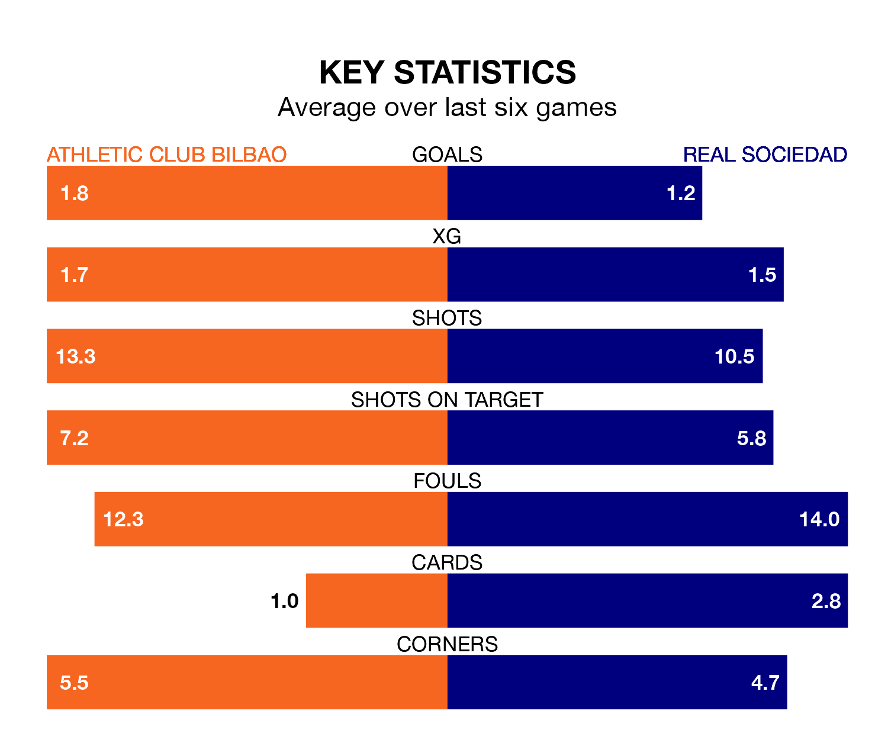

Two of La Liga's meanest defences go head-to-head at San Mamés Barria on Saturday, when Athletic Club Bilbao host Real Sociedad.
Only two sides – Real Madrid and UD Las Palmas – have conceded fewer goals than Athletic to date: the home side have let in just 19 goals in 19 games.
Real Sociedad have conceded the same number of goals in as many games, giving them the joint-third tightest back line so far this season.
Key to Athletic Club Bilbao's home form has been Unai Simón, who has allowed one goal past him per 90 minutes, compared to 0.71 for Álex Remiro in the opposite net.
In the last 10 years, Athletic and La Real have played each other on 21 occasions. Athletic won six of them, La Real eight, and they drew seven times.
On average, Athletic Club Bilbao scored 1.1 goals and Real Sociedad 1.2 in those matches.
Their last meeting was on September 30, when La Real won 3-0 at home.
Athletic are fourth in the table after 19 games, of which they have won 11 and drawn five, earning 38 points.
La Real are two places behind Athletic Club Bilbao in sixth, with eight wins and eight draws putting them on 32 points.
The home team are in good form in La Liga, with four wins and two draws from their last six games.
With two wins and four draws over that period, Real Sociedad's form is worse – they have taken 10 points from 18, compared to Athletic's 14.
Athletic's Nico Williams is among the league's most creative players, racking up five assists in 16 appearances so far this season, and holding second spot in La Liga's assist charts.
For the visitors, Diego Rico has set up the most goals, having laid on five assists in 14 games.
Athletic's last match was on January 4, a 2-0 win against Sevilla, with Aitor Paredes and Mikel Vesga getting the goals for Athletic Club Bilbao.
La Real drew 1-1 with Deportivo Alavés last time out, on January 2, with Martín Zubimendi on the scoresheet.
Updated: 11:29, 08/01/24